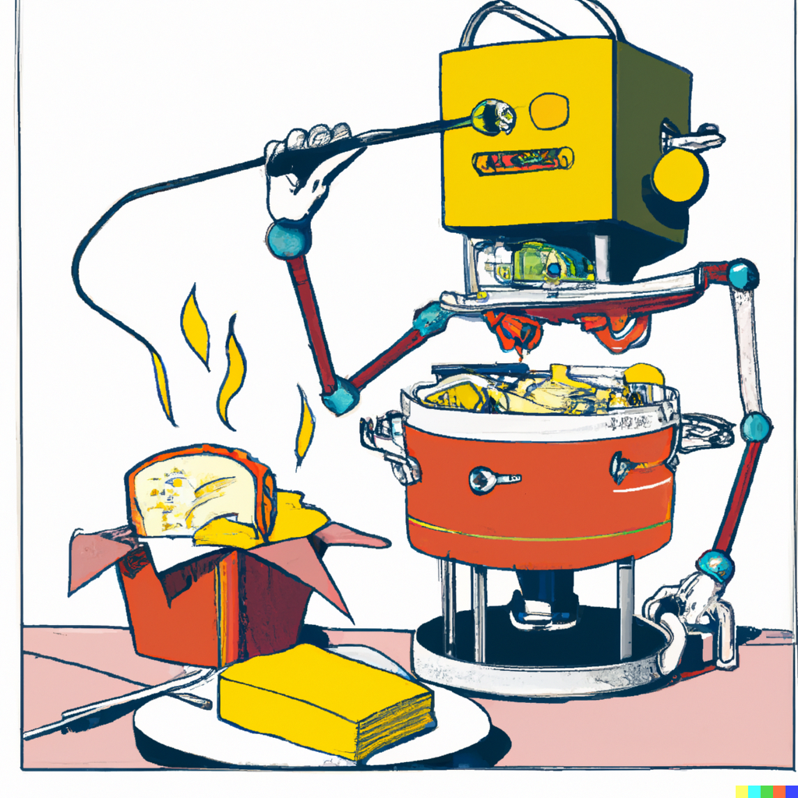

Grilled Cheese Recipe

How make a Grilled Cheese Sandwich
Ah, the classic grilled cheese sandwich. A go-to for those who just can't handle life's complexities. Made with
a mere three ingredients – bread, cheese, and butter – this sandwich is perfect for the lazy and uninspired. But
hey, who needs inspiration when you have a grilled cheese, am I right? Whether you're too lazy to cook a real
meal or just want to relive your childhood memories, the grilled cheese is here to save the day. And with a
variety of cheeses and breads to choose from, you can mix and match to your heart's content. So go ahead,
indulge in your mediocrity. We won't judge.
Ingredients:
- 2 slices of bread of your choice
- 2 slices of cheese of your choice
- 1 tablespoon of butter
Steps:
- Heat a non-stick pan over medium heat.
- Spread one side of each slice of bread with butter.
- Place one slice of bread, buttered side down, in the pan.
- Put the cheese slices on top of the bread slice in the pan.
- Put the other slice of bread on top, buttered side facing up.
- Cook until the bottom slice of bread is golden brown, about 2-3 minutes.
- Flip the sandwich over with a spatula and cook until the other side is golden brown and the cheese is
melted, about 2-3 minutes.
- Serve hot and enjoy!